Introduction
Animal Crossing is a nice relaxing game to play at your own
pace but there is so much
the game does not tell you about.
These are tips that I personally wish I had when I started
the game!
I hope these tips will help you and your island!
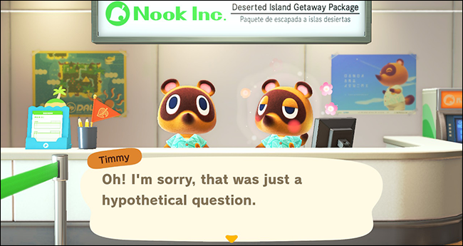 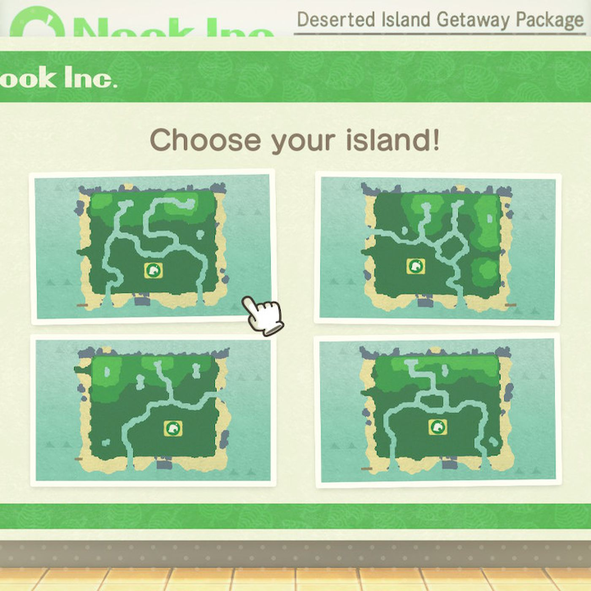
Start Up
1. It's ok if you don't like your island layout!
You can edit that later on.
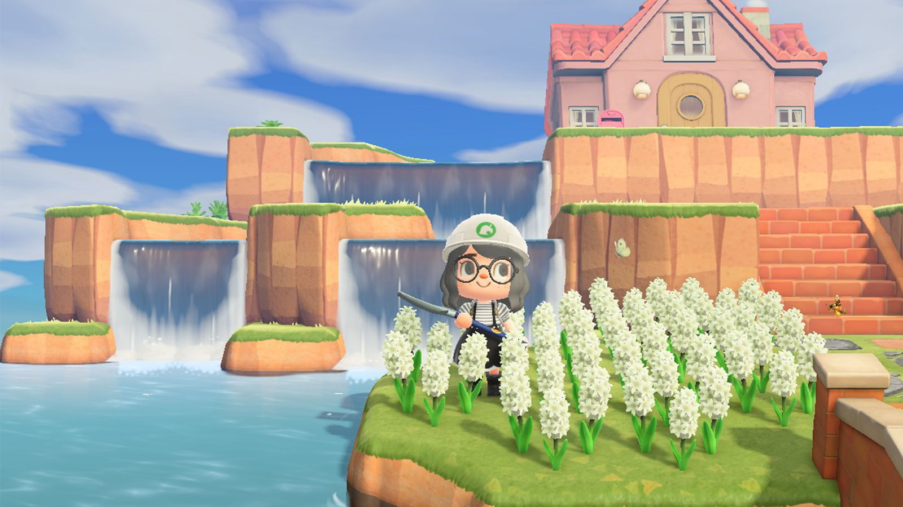
2.Your appearance can also change once you get a mirror.
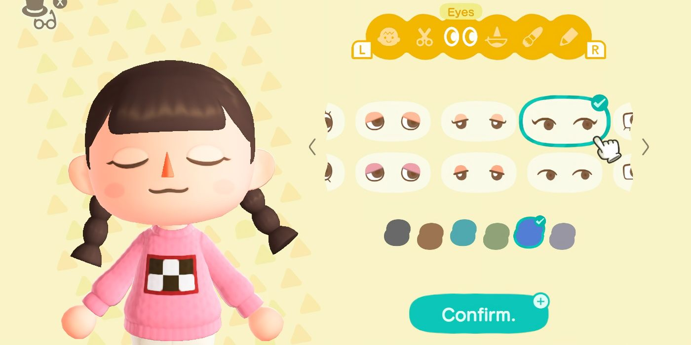 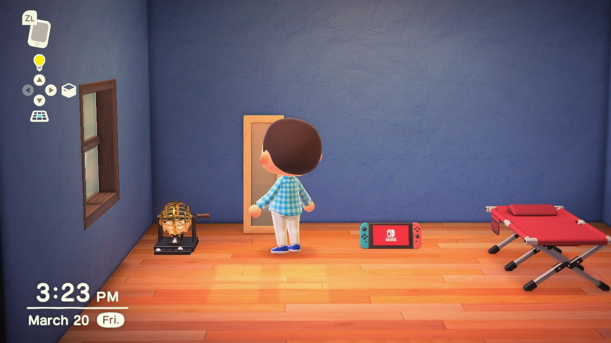
3. The only thing you can't change is your Island Name and your own name!
So be warned!
4. If you don't like the color of your airport or native fruit,
you could hard reset by
deleting the saved data to hard reset.
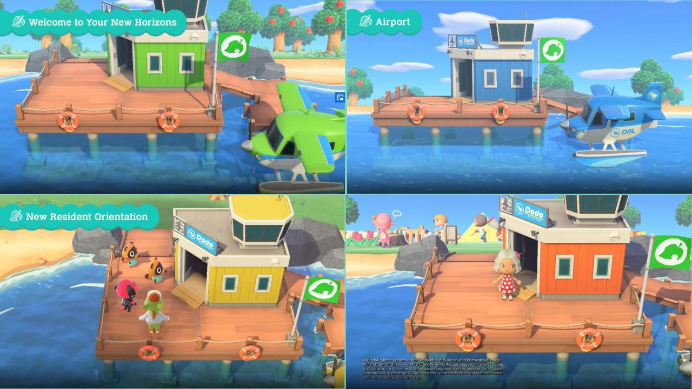
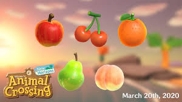
5. When picking a layout, the things to note is the location of the peir,
mouths of rivers and distance from the Residential Services and Aiport.
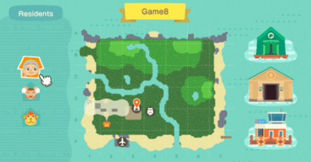
Beginner Tips
1. Make a quick town toon and town flag! Having Nook Miles early
on will help pay first debt and get more NMT(Nook Mile Tickets)

2. Easy bells you can make is selling weeds and fruit!
(But save some weeds for crafting)
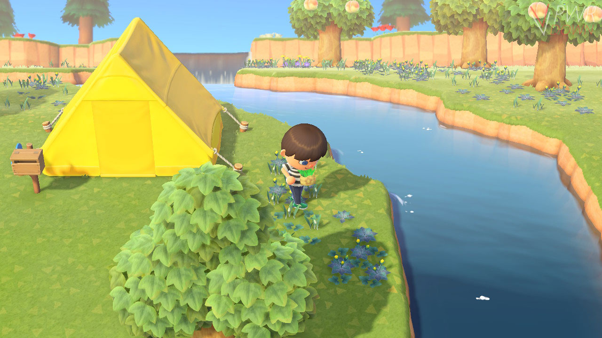
3. Donate your first fish and bugs to Tom Nook (then soon Blathers) to get
the Museum upgrade!
 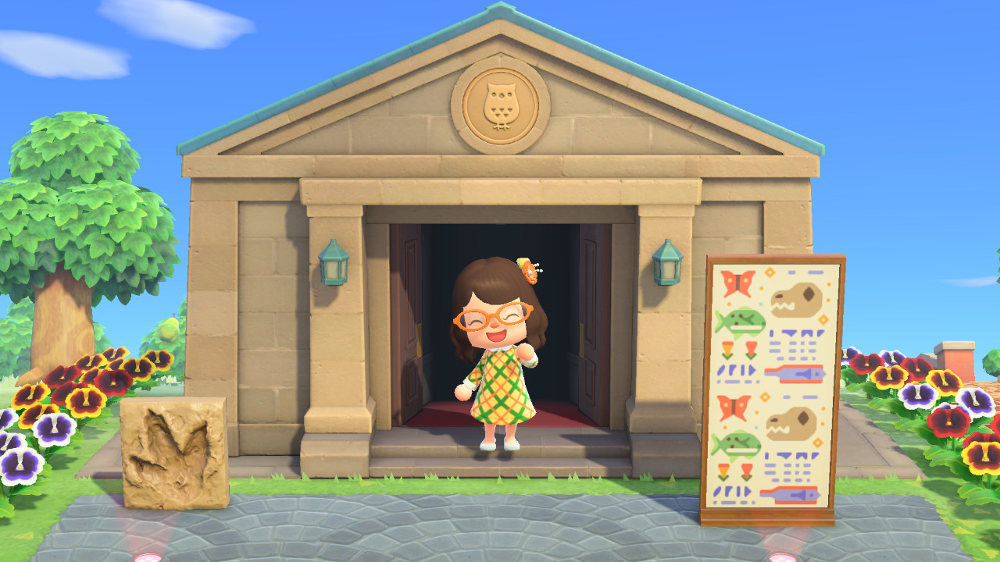
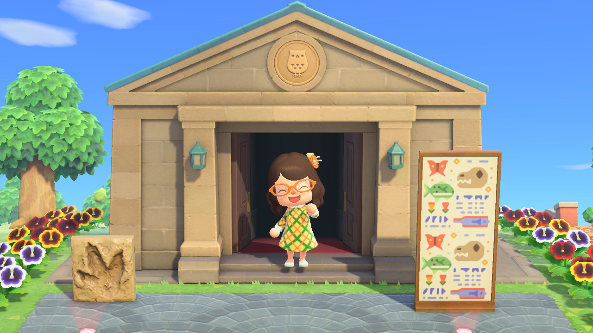
4. The Nook Cranny takes 30 of each wood and 30 iron nuggets so save all the
nuggets!
5. It's ok to time travel! Its usually looked down upon but if you play at a fast
pace then that's ok! It's not considered cheating when you're still playing the
game with no exploits. Just watch if you have turnips (they will spoil) and a
little bit more weeds will grow.
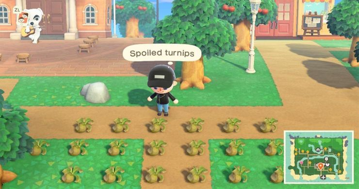
6. Don't cut down trees with an iron axe! You can move trees with eating fruits.
Waiting for trees to grow will take too long
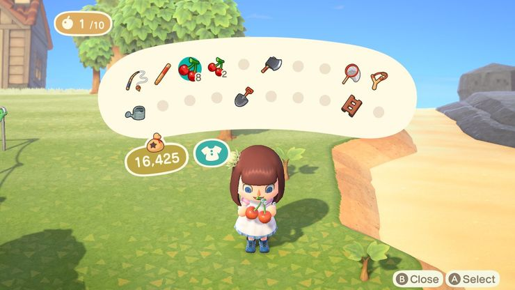